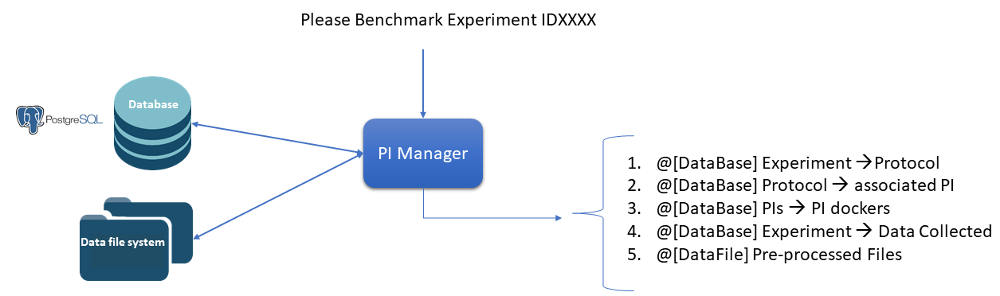
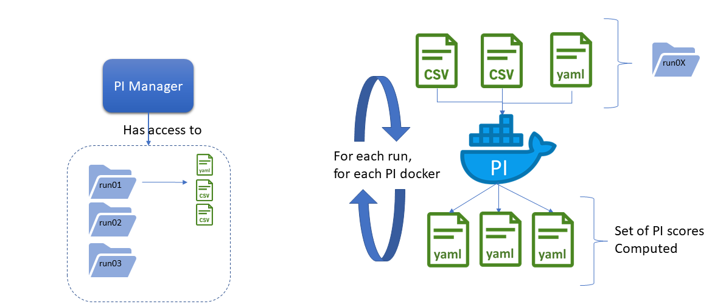

Performance Indicator Specification 1. Introduction Performance Indicators (or PIs) refer to the algorithms used to compute performance metrics for a given experiment and following pre-defined protocol. In the context of Eurobench, PIs are the bases for later performance comparisons between different wearable robotic devices (or humanoids) which have performed comparable experiments. There exists: General PIs related to system ability: Motion ability: Successful task time, Maximum cadence, Mechanical energy, … Human Robot Interaction: Comfort, Muscle fatigue, Metabolic cost, … Adaptability: Versatility, Task adaptability, Cognitive: Intention decoding, Cognitive effort Scenario specific PIs Scenario Walking on slopes: Slope angle the subject can walk up, Maximum velocity the subject can walk up, … Scenario Walking on stairs: Step height that the subject can walk up, Maximum number of successive stairs the subject can walk up, … Scenario Overcoming obstacles: maximum height of an obstacle the subject can walk over, … Scenario Picking and carrying objects: Weight of the object which can be picked up and carried, Walking speed while carrying an object, … 1.1. A bit of context: the PI Manager A key component of the Benchmarking Software is the PI Manager. It is called every time a new experiment is uploaded to the Benchmarking System. The objective of the PI Manager is to orchestrate the computation of the performance metrics for that experiment. The overall interaction scheme is described on the following figure. We assume here that an experiment has just been uploaded to the Benchmarking Software, i.e. all experimental data are already uploaded and stored into the database. The remaining operation is the scoring of the experiment, which is for what is triggered the PI Manager. The successive operations conducted by the PI Manager are the followings: From the Experiment ID, the PI Manager gets access from the database to the Protocol this experiment is related to. From the Protocol ID, the PI Manager gets the list of PI algorithms associated to it, along with the PIs calculated by each of theses algorithms. For each algorithm, the PI Manager gets access to the Algorithm Docker identifier From the Experiment ID, the PI Manager locates in the datafile system the folder related to that experiment. It contains all the Pre-Processed files uploaded by the experimenter. From the Datafile system, the PI Manager can access to all the experiment files required as parameters / input files to run the algorithm.  Figure 1. Global interaction of the PI Manager with the database to collect the experimental data As mentioned, each of the PI routines are encapsulated within a docker image. It avoids any dependency conflicts in between the different PI code implementation, and isolates the PI Manager machine from the PI computation effort. The PI Manager has somehow (to be clarified) a local copy of the experiment files, which can be organized as on the left picture of the following figure.  Figure 2. Overall PI Manager processing loop We assume that each run (iteration of the experiment with similar conditions or independent variables), is described by a set of Pre-processed files. Then The PI Manager loops on each run as follows: For each run gather all pre-processed files associated to that run, together to any condition files describing the experimental condition. For each PI docker, run the PI docker with current run files store each PI score, related to a unique run PI evaluation Once each run has been evaluated, the PI Manager compute the global PI score, given the computed PI per run. All results are uploaded to the database Once this loop is achieved, the PI scores of that experiment are uploaded into the database. That way, a future comparison of this experiment with another only consists in consulting the data stored into the database. Message to take away: All PI algorithms have to be encapsulated into a Docker image All PI algorithm should be able to launch computation given the Pre-Processed files associated to a single run. The preparation of the Docker image containing the processing algorithm will be more extensively detailed later on. 2. PI repository structure To reach that structure, a PI code repository must have the following structure: README.md src/ test_data compile.sh DockerFile install.sh run_pi with: README.md (or any rich text format): should contain common indications about the repository content, purposes, maintainer, … src should gather all the code of the PI algorithm. If the code organization is left to the PI algorithm developer preferences, we strongly advice following good software practices. test_data: folder containing reference input data and associated expected output result that can be used for making code testing. compile.sh: shell script containing the command to build the program DockerFile: file indicating how to create the Docker image for that code. install.sh: shell program indicating how to install all dependencies on a fresh Ubuntu machine. run_pi: script that will be the Docker container entry point, and that should launch the PI computation, given an input folder (with all input processing files) and an output folder (to store result files). We are aiming at such generic repository structure to have a common management scheme for all PI code. Most of the mentioned files are related to the preparation of the Docker image, which will be described in a second phase. We will now focus on the expected interface of the benchmarking algorithm. 3. PI algorithm interface Independently of the programming language, we request the entry point (being an executable or a script) to have the interface illustrated on Figure named Overall PI Manager processing loop: Input: all preprocessed data file of a single run Output: one file per Performance Indicator computed. It is important noting that the PI algorithm should be able to run provided the data of a single run. Thus, if the experiment contains 5 runs, the algorithm will be called 5 times. 3.1. Input data The input data of an experiment can be composed of: datafile collected from sensors during the experimentation datafile corresponding to benchmarking condition, like robot specification, human specification, testbed configuration, … We assume the processing algorithm entry point expects all input files to be explicitly detailed: run_pi subject_N_run_R_jointAngles.csv subject_N_anthropometric.yaml testbed.yaml [output_folder] The expected launch command is the information required in the PI Algo template entry named input command. 3.2. Output data To be again generic, we are proposing the following strategy: One file per PI score. That file would have a YAML structure indicating the content type. The accepted formats are now listed. 3.2.1. scalar For a scalar output: type: 'scalar' value: 42 3.2.2. vector For a vector output: type: 'vector' # label is optional label: [lab1, lab2, lab3, lab4, lab5, lab6, lab7, lab8, lab9, lab10] value: [0.96867, 1.01667, 0.98843, 0.95168, 0.87936, 0.94576, 0.87802, 0.87571, 0.81802, 0.82336] The key label is optional. If used, there should be as many labels as entries in the value vector. As a rule of thumb: using label makes sense if each entry of the vector refers to some different aspects (like a vector containing the step length, the step time, and the stride time) without label, the vector may be referring to the same measure repeated along the actions (like all step length measured). 3.2.3. matrix type: 'matrix' # labels are optional row_label: [row_1, row_2, row_3] col_label: [col_1, col_2, col_3] value: [[1.0, 0, 0], [0, 1.0, 0], [0, 0, 1.0]] Labels can be used to enhance the visualisation of the matrix. 3.2.4. vector of vectors The difference with a matrix is that each vector may have different lengths type: 'vector_of_vector' values: - label: [label_1, label_2] value: [val_1, val_2] - label: [label_1, label_2, label_3] value: [val_1, val_2, val_3] Again, labels are optionals, but can be used to ease the display of the PI content. 3.2.5. vector of matrices type: vector_of_matrix value: - row_label: [row_1, row_2, row_3] col_label: [col_1, col_2, col_3] value: [[1, 2, 3], [4, 5, 6], [7,8,9]] - row_label: [row_1, row_2, row_3] col_label: [col_1, col_2, col_3] value: [[1, 2, 3], [4, 5, 6], [7,8,9]] Again, labels are optional. 3.2.6. string type: 'string' value: 'hip' 3.2.7. General considerations The type of the output file of a given Performance Indicator is defined in the PI spec, set in the template sheet. Providing several PI outputs through a unique source code or algorithm is an option provided to the developer. But in any case, we should have as many files generated as PI computed. The name of each PI file has to be the same as the name of the PI, as specified in the PI table in the name entry. For non-scalar metrics, we suggest the definition of a metric to compress or aggregate the score (like using mean for providing a unique value from a vector result for a given run). See the intra-run aggregation definition. The scoring is ideally performed per run. The score aggregation across the N runs (like how to extract an experiment step_time score given all the step_time vectors obtained in the successive runs) is specified in the template. See the inter-run aggregation definition. It will be automatically computed by the PI Manager